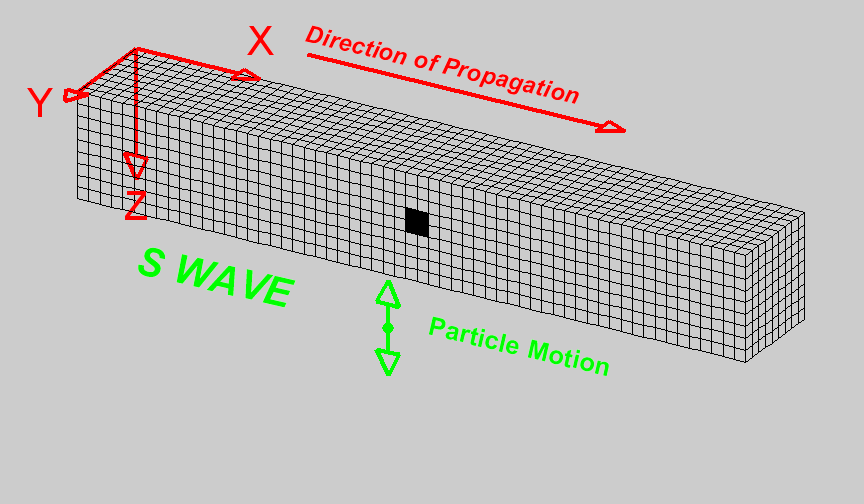

Seismic Velocity
Elastic energy propagates through the earth in different ways and at different speeds. The main wave types are body waves (P and S waves) and surface waves (Rayleigh and Love waves). Whereas body waves travel through a medium, surface waves travel along surfaces and interfaces. Each wave has a distinct particle motion, elastic deformation and speed of propagation. The speed of propagation depends upon the elastic properties and the density of the medium. Density has been discussed already and will not be presented again here.
Elastic properties are used to define the physical deformation that matter experiences in response to an applied mechanical force. In response to a hammer strike, earthquake or explosive detonation, nearby materials within the Earth experience elastic deformations. The energy from the initial elastic deformations are then transferred to adjacent materials. This process continues as the deformation propagates away from the source. We therefore use seismic waves to describe the speed, direction and location of elastic deformations as they propagate through materials.
Elastic Deformation
When a mechanical force is applied to a material, it may experience a change in volume and/or shape. If the deformation is elastic, it implies that once the applied force is removed, the material will return to its original volume and shape. As a result, elastic deformation conserves energy. Elastic deformation is commonly described in terms of stress and strain.
Stress
Stress is defined as the external force applied to a body divided by the cross-sectional area of the body over which the force is applied. There are two main types of stress: normal stress and shear stress. Normal stress is perpendicular to the surface of an object whereas shear stresses are tangential. Normal stresses can be further divided into compressive and tensile stresses. Compressive, tensile and shear stress are illustrated in the figure to the right. Stress is a force per unit area and has SI units units of N/m \(\! ^2\).
Strain
Strain defines the deformation of a material under the influence of an applied stress. When a body is stressed it may undergo a change in size and shape. If this occurs, the body is said to be “strained”. For relatively small strains, the body will recover its original shape and volume when the stress is removed. This is known as “elastic strain”. If the strain is too large, then the body deforms plastically and may even fracture. Unlike elastic strain, plastic strain permanently alters the shape of the body.
Fig. 12 Elastic and plastic deformation
The figure below plots how strain (horizontal axis) accumulates as stress (vertical axis) is applied. While behaviour is elastic, increasing or decreasing the stress does nothing to permanently change the material. Once stress is sufficient to make material behave plastically, reducing the stress results in reduced strain along a different path on the graph. Once the fracture point is reached, the strain is released by breaking.
Material Elastic Properties
In this course—and for the vast majority of seismic analysis—we will assume that seismic waves cause the earth to undergo linear elastic deformation. In other words, we assume a linear relationship between stress and strain. This is known as Hooke’s law. For a given material, that relationship can be characterized by a set of two independent material parameters that characterizes the strains produced as a result of various stresses. These parameters are intrinsic properties of the material. The parameters, or elastic moduli, can be defined in several ways and are also known as Lamé parameters. The most common set of parameters in seismology are the bulk and shear moduli. Young’s modulus and Poisson’s ratio are also commonly used. We describe these quantities here.
Bulk Modulus and Shear Modulus
Bulk Modulus

Fig. 13 Bulk modulus diagram.
The bulk modulus (\(K\)) defines the resistance of a material to elastic compression. As a result, it is sometimes referred to as the modulus of incompressibility. When a block of material is subjected to compressional forces, its volume decreases and it becomes more dense (see figure). Once the compressional force is removed, the block of material returns to its original size if the deformation is elastic. The bulk modulus characterizes the compressional deformation as follows:
where \(V_0\) is the original volume of material, \(\Delta P\) represents the pressure being applied to the material and \(\Delta V\) is the resulting change in volume.
Shear Modulus

Fig. 14 Shear modulus diagram.
The shear modulus (\(\mu\)) defines how resistant a material is to shear stress. As a result, it is sometimes referred to as the modulus of rigidity. When a block of material is subjected to a shear stress, it experiences a shear strain (see figure). The shear modulus defines the ratio of shear stress to shear strain:
where the shear stress is represented by a force (\(F\)) per unit area (\(A\)). Shear strain represents a tangent angle between the shear deformation (\(\Delta x\)) of the material along the direction of force and the perpendicular dimension (\(l\)) of the block of material.
Young’s Modulus and Poisson’s Ratio
Young’s Modulus

Fig. 15 Young’s modulus and Poisson’s ratio diagram. Image from Subsurface Wiki, licensed under CC BY 3.0.
{kind=link}
Young’s modulus is defined to be the ratio of longitudinal normal stress to longitudinal normal strain. Consider the rectangular prism shown below with square cross-sectional area \(A = W^2\) and length \(L\). A force \(F\) applied normal to the axis of the prism, distributed over the cross-sectional area, will generate a normal stress of \(P = F/A\). If this stress generates a reduction in length of the prism of \(\Delta L\), the Young’s modulus of the prism material is
Poisson’s Ratio
As a result of the longitudinal stress described above the cross-sectional area of the prism may be increased, compensating for the reduction in length. Let us define the cross-sectional strain as \(\Delta W / W\). Poisson’s ratio is the ratio of transverse strain to longitudinal strain due to a longitudinal stress:
Note that it is possible for \(\sigma\) to be zero. The decrease in length could be compensated for by decrease in pore space for example. Cork is an example of such a material.
Other Elastic Parameters
In addition to the bulk modulus, shear modulus, Young’s modulus and Poisson’s ratio, there are a multitude elastic parameters which can be used in pairs to define Hooke’s law. We will not cover the entire range of parameters in this course. A table showing the relationships between the various parameter pairs can be found here.
Seismic Wave Velocities
Rocks and other materials can be characterized by their elastic properties. However, seismic velocities represent a more practical set of physical properties for seismic methods. Seismic velocities define the speed at which various elastic deformations propagate through materials. And as we will see, seismic velocities for a given material can be expressed explicitly in terms of its elastic properties.
Body Waves
In seismology, there are two fundamental types of body waves: pressure waves (“P-waves”) and shear-waves (“S-waves”).
P-waves

P-waves are compressional waves in which particle motion is in the direction of the wave propagation. The compression and extension of the medium, and the propagation of the wave, can be seen in the diagram on the right [1]. As we can see, cells change volume when they come in contact with the wave. The P-wave velocity is related to the elastic properties of the medium by the following expression:
where \(K\) is the bulk modulus, \(\mu\) is the shear modulus and \(\rho\) is the density.
S-waves
{kind=link}
S-waves are shear waves in which the particle motion is perpendicular to the direction of wave propagation. The shearing action and the propagation of the wave can be seen in the diagram on the right [1]. Cells change shape but do not change volume when they come in contact with the wave. When there is a reference interface, such as the surface of the earth, S-waves are labelled as SH (horizontal shear) and/or SV (vertical shear). This is used to indicate the direction of particle motion with respect to the surface. In isotropic media, SH and SV waves travel at the same speed. The S-wave velocity can be related to the elastic properties of the medium by the following expression:
S waves propagate through materials more slowly than P waves. In addition, S waves cannot propagate through fluids, as fluids do support shear particle motion.
Surface Waves
In seismology, there are two fundamental types of surface waves: Rayleigh waves and Love waves.
Rayleigh waves

Rayleigh waves are surface waves in which particle motion is elliptic. The particle motion which defines Rayleigh waves can be seen in the diagram on the right [1]. In Rayleigh waves, elliptic particle motion can be prograde (in the same direction as the propagating wave) or retrograde (in the opposite direction as the propagating wave). The amplitude of the elliptic motion decreases with depth. As a general rule, Rayleigh waves at the surface of the Earth have a propagation speed which is 90 % the speed of shear waves, thus:
Love waves

Love waves are surface waves in which particle motion is parallel to the Earth’s surface and perpendicular to the direction of wave propagation. The particle motion which defines Love waves can be seen in the diagram on the right [1]. The amplitude of lateral motion which describes Love waves decreases with depth. Love waves travel faster than Rayleigh waves but do not travel as fast as P or S waves. Thus Love waves have a propagation speed of:
Symbols used to define P-wave and S-wave velocities, as well as the elastic properties on which they depend, are summarized in the following table:
Property |
Symbol |
Units |
|---|---|---|
P-Wave Velocity |
\(v_p\) |
m/s or km/s |
S-Wave Velocity |
\(v_s\) |
m/s or km/s |
Bulk Modulus(Incompressibility) |
\(K\) |
Pa or GPa |
Shear Modulus (Rigidity) |
\(\mu\) |
Pa or GPa |
Density |
\(\rho\) |
kg/m \(\!^3\) or g/cm \(\!^3\) |
P-Wave and S-Wave Velocity Measurements
Ultrasonic Elastic Wave Velocity Measurements
To measure the P-wave and S-wave velocities for a given rock, a core sample is taken. The core sample is then held in place between two piezometric transducers. Piezometric transducers contain materials which contract and expand in response to an applied voltage.

The measurement apparatus works by generating a short current pulse. As a result of the incoming current pulse, materials within the source transducer undergo elastic deformation. This elastic deformation is then transferred to the rock core where it propagates as elastic waves. On the other side of the rock, a receiver transducer registers the elastic waves and transforms the corresponding energy back into a current signal. This current signal is then measured by an oscilloscope.
Using the oscilloscope, we can determine the amount of time (\(\Delta t\)) it took for the elastic waves to propagate through the rock core. Given that we know the length of the rock core (\(L\)), the seismic velocity is given by:
In practice, the user may control whether they are measuring P-wave or S-wave velocities by specifying the direction of elastic deformation within the source transducer. Elastic deformation parallel to the length of the core results in P-wave velocity measurements, whereas elastic deformation perpendicular to the length of the core results in S-wave velocity measurements.
P-Wave and S-Wave Velocities in Common Rocks
P-waves and S-waves travel at different speeds depending on the media they are propagating through; P-waves travel faster than S-waves. P-waves are able to propagate through solids and fluids, however, S-waves can only propagate through solid materials. Given that there are so many factors which impact the velocity of seismic waves, it is impossible to assign a single value to a particular rock type. Therefore, the seismic velocities of rocks are generally defined over a range. The range of P-wave and S-wave velocities for common materials are shown below:
Material |
P-wave (m/s) |
S-wave (m/s) |
|---|---|---|
Air |
343 |
N/A |
Water |
1450 - 1500 |
N/A |
Ice |
3400 - 3800 |
1700 - 1900 |
Oil |
1200 - 1250 |
N/A |
Vegetal Soil |
300 - 700 |
100 - 300 |
Dry Sands |
400 - 1200 |
100 - 500 |
Wet Sands |
1500 - 2000 |
400 - 600 |
Saturated Shales and Clays |
1100 - 2500 |
200 - 800 |
Porous and Saturated Sandstones |
2000 - 3500 |
800 - 1800 |
Marls |
2000 - 3000 |
750 - 1500 |
Chalk |
2300 - 2600 |
1100 - 1300 |
Coal |
2200 - 2700 |
1000 - 1400 |
Salt |
4500 - 5500 |
2500 - 3100 |
Anhydrites |
4000 - 5500 |
2200 - 3100 |
Limestones |
3500 - 6000 |
2000 - 3300 |
Dolomites |
3500 - 6500 |
1900 - 3600 |
Granite |
4500 - 6000 |
2500 - 3300 |
Basalt |
5000 - 6000 |
2800 - 2400 |
Gneiss |
4400 - 5200 |
2700 - 3200 |
Factors Impacting the Seismic Velocity
Given that P-wave and S-wave velocities both depend on the shear modulus and density of the material, many of the factors which impact the P-wave velocity will affect the S-wave velocity in a similar manner. Below are some of the factors which are known to affect the seismic velocities in materials.
Mineralogy and Structure
The mineralogy and structure of a rock determines its bulk modulus, shear modulus and density; which define the P-wave and S-wave velocities. In general, igneous, metamorphic, carbonate and anhydrite rocks have relatively large seismic velocities compared to soils and most sedimentary rocks. This is because the aforementioned rocks only deform under extreme compressional and shear stresses, and are therefore characterized by larger bulk and shear moduli. In sandstones and soils, clays have a tendency to present in load-bearing positions. As a result, seismic velocities are heavily influenced by clay content. Even in small abundances, clays have been shown to significantly reduce the seismic velocity by reducing the shear modulus.
Porosity
The most significant factor affecting seismic wave velocities is porosity. In the above table, we saw that seismic waves travel faster in solids than they do in fluids; with S-waves being unable to propagate through fluids. Thus as the porosity of a rock increases, both the P-wave and S-wave velocities will decrease. This is because seismic wave propagation becomes less efficient when forced through a fluid. Although it will not be explained here, the pore structure also plays an important role in reducing the efficiency of seismic wave propagation within rocks.
Pore Fluid and Saturation
Pore fluid determines the elastic properties of the pore space. Since P-wave velocity is larger in water and oil than it is in air, the P-wave velocity of a rock is less impacted by porosity if the pore-space is saturated. Additionally, the S-wave velocity has been shown to depend on the density of the pore fluid. As a result, P-wave and S-wave velocities increase as pore saturation increases. This can be described in a rudimentary manner using Wyllie’s equation:
where \(0 \leq \phi \leq 1\) is the fractional % fluid saturation, \(V_{fluid}\) is the seismic velocity of the fluid, \(V_{matrix}\) is the seismic velocity of the solid material within the rock, and \(V_{bulk}\) is the bulk seismic velocity for the rock.
Lithification
Lithification describes the geological process in which unconsolidated sediments become consolidated through compaction and cementation. When subject to tectonic compression, or under the weight of overlying geological units, sediments and soils become compacted. This compaction reduces the pore-space which ultimately increases the P-wave and S-wave velocities. As a result, the seismic velocities of sedimentary units frequently increase with depth.
Cementation refers to chemical fluid processes in which pore space is replaced by a precipitate and mineral grains become fused to one another. Cementation increases the incompressibility and rigidity of the sedimentary rock, thus increasing its bulk and shear moduli. Ultimately, this process is responsible for increasing the seismic velocities.
Footnotes